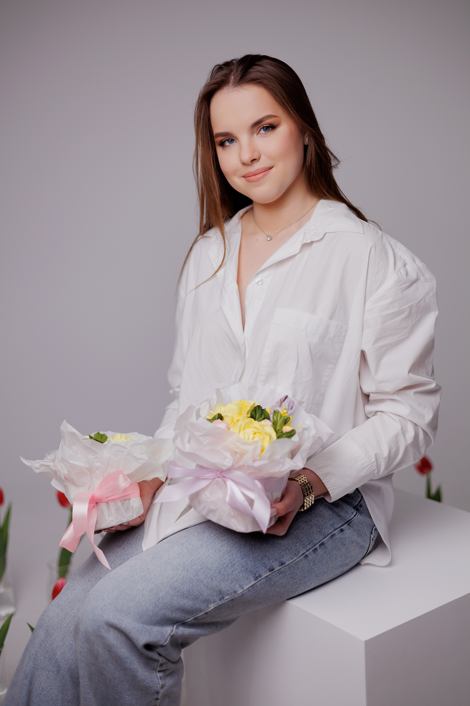
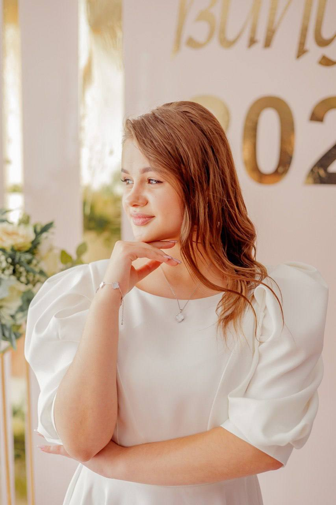

ПРО ВЛАСНИКА
Інтерв'ю власниці Zefirna Magic

Мене звати Софія, я засновниця Zefirna Magic — бренду, де зефірна флористика стає мистецтвом.
Мій шлях розпочався з випадкового відео в Instagram. У ньому було щось настільки естетичне й незвичне, що я
не
змогла залишитися байдужою. Кілька днів вагалася, але все ж зробила перший крок — інвестувала в навчання та
створила свою першу партію зефіру 17 лютого 2025 року.
Тоді я починала з мінімальних матеріалів і навіть не дозволяла собі мріяти про масштаб. Але перші замовлення
з’явилися одразу, адже у моєму місті це було справжньою новинкою.
Першим великим випробуванням став 8 березня — період, який назавжди залишиться у моїй пам’яті. Три дні без
сну,
десятки композицій, шалений темп і повна відповідальність за кожну деталь. Усі замовлення були виконані
вчасно,
але після цього прийшло вигорання. Саме підтримка рідних стала тим, що повернуло мене до справи та дало сили
рухатися далі.
Крок за кроком, свято за святом, я створювала свій стиль, формувала бренд і вдосконалювала кожну композицію.
Сьогодні Zefirna Magic — це не просто десерти. Це про емоцію, естетику та подарунок, який запам’ятовується.
Я не обіцяю ідеальності. Я обираю розвиток.
І знаю: найкраще — попереду.
Zefirna Magic — коли солодке виглядає як розкіш.
ПРО РОЗРОБНИКА САЙТУ

Мене звати Вікторія. Я навчаюсь на першому курсі Вінницького національного технічного університету за
спеціальністю "Кібербезпека та захист інформації"
Мій шлях у розробку почався з цікавості до того, як влаштований цифровий світ зсередини. Зараз я поєдную
навчання у ВНТУ з практичним опануванням коду — від вивчення алгоритмів на C++ у CLion до створення
зручних
веб-інтерфейсів. Для мене важливо, щоб кожен рядок коду був не просто робочим, а й захищеним, тому я
приділяю багато уваги деталям та безпеці даних. Окрім програмування, мене надихає цифрова естетика та
сучасні технології, які допомагають створювати щось справді унікальне.
Моя мета — стати фахівцем, який створює софт, де зручність користувача межує з найвищим рівнем безпеки
даних.
Мій сайт-візитка
.png)